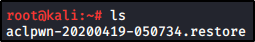

We can run the mitm6 and start getting replies from the network:
Now we can set the relay attack using NTLMrelayx.py
Now, reboot your THEPUNISHER machine and log in as Marvel Administrator:
The reboot dumped all the information (see image 1)
And with the login we passed the NTLM hash of Administrator to out Domain Controller LDAP:
We can see what we dumped into our loot folder:
Also, we have a file to restore the policy for ACL, to turn back like it was:
This is because we created a new user (wKAsBjqXSb) with a Policy and unique privileges 